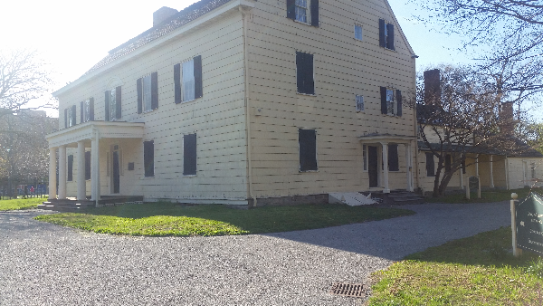
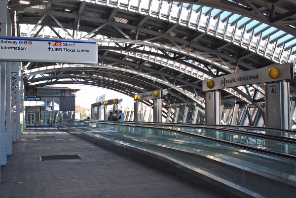

The facade of the Valancia theatre has not changed much since its days when it was opened in 1929. The theatre was designed by John Eberson in a Baroque Spanish style, but the Valencia is now a church, the Tabernacle of Prayer.
King Manor, facing Jamaica Avenue in King Park between 150th and 153rd Streets, was the mansion belonging to Rufus King (1755-1827). King, always an ardent abolitionist. The mansion was first built in 1730 and King purchased the building in 1805. The King Manor Association has maintained the building since 1900 and it opened to the public in 1992.
A railroad link to JFK Airport had been proposed since 1968 as part of the Program for Action. From the 1970s to the early 1990s, various plans surfaced to try to build such a link. In 1995, the current people-mover system started construction. The system opened on December 17, 2003, with connections to the New York City Subway and Long Island Rail Road.